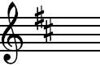

Article labellisé du jour
Le prélude et fugue en si mineur (BWV 869) est le 24e et dernier couple de préludes et fugues du premier livre du Clavier bien tempéré de Jean-Sébastien Bach, compilé vers 1722.
Pour couronner son ouvrage le compositeur place un diptyque de grande ampleur à même de déployer son art contrapuntique et démontrer musicalement que toutes les tonalités peuvent être jouées sur un clavier, grâce à un accord tempéré.
Le prélude est un mouvement de sonate en trio à trois voix de facture coréllienne, évoquant une prière. La fugue à quatre voix est une sorte d'immense méditation à la gravité d'autres œuvres, telles les Passions. L'œuvre entière est citée en exemple par Kirnberger dans son traité de l'harmonie publié en 1773. Elle est l'objet de transcriptions diverses pour quatuor et quintette à cordes ou pour orchestre.
Les deux cahiers du Clavier bien tempéré sont considérés comme une référence par nombre de compositeurs et de pédagogues. D'abord recopiés par les musiciens, puis édités au début du xixe siècle, outre le plaisir musical du mélomane, ils servent depuis le xviiie siècle à l'étude de la pratique du clavier et à l'art de la composition.
Le saviez-vous ?
- Joan Fontaine (photo) remporta l’Oscar de la meilleure actrice, en 1942, pour son rôle dans Soupçons, devançant sa sœur aînée Olivia de Havilland, en compétition dans la même catégorie.
- Devenu président du gouvernement d’Espagne en juin 2018, Pedro Sánchez a remporté pour la première fois un vote d’investiture en janvier 2020.
- La notion de produit intérieur brut est généralement attribuée à Simon Kuznets, sollicité par le congrès des États-Unis pour élaborer un indicateur permettant de mesurer les effets de la Grande Dépression.
- Les aiguilles du pin flexible abritent des colonies bactériennes capables de fixer l’azote de l’air.
- Les recherches n’ont identifié qu’une seule victime de l’événement de la Toungouska, qui a dégagé une énergie estimée à 1 000 fois celle de la bombe d’Hiroshima.
- Zheng He était à la tête de l’exploration maritime de la Cour impériale chinoise qui alla jusqu’aux côtes africaines au début du xve siècle.